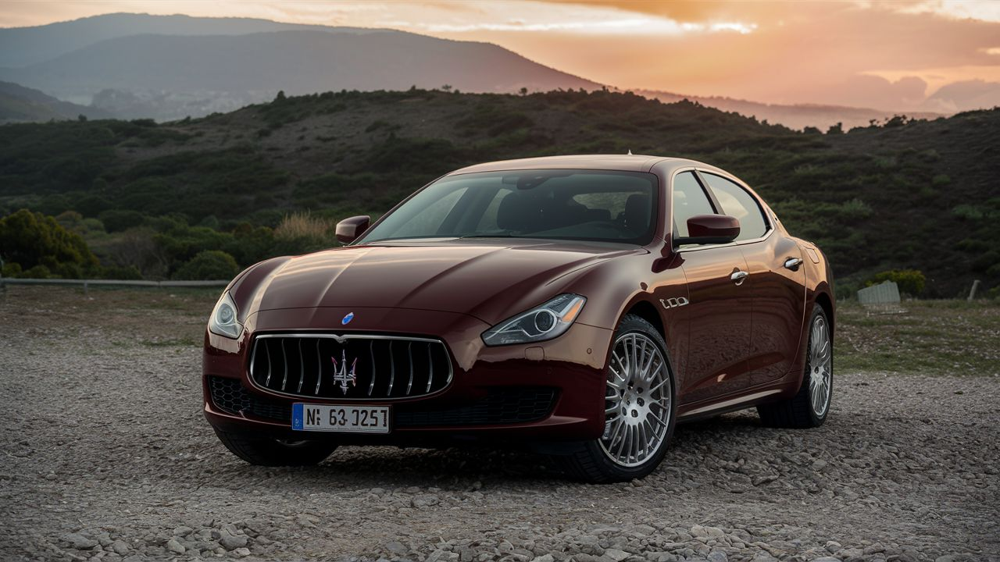
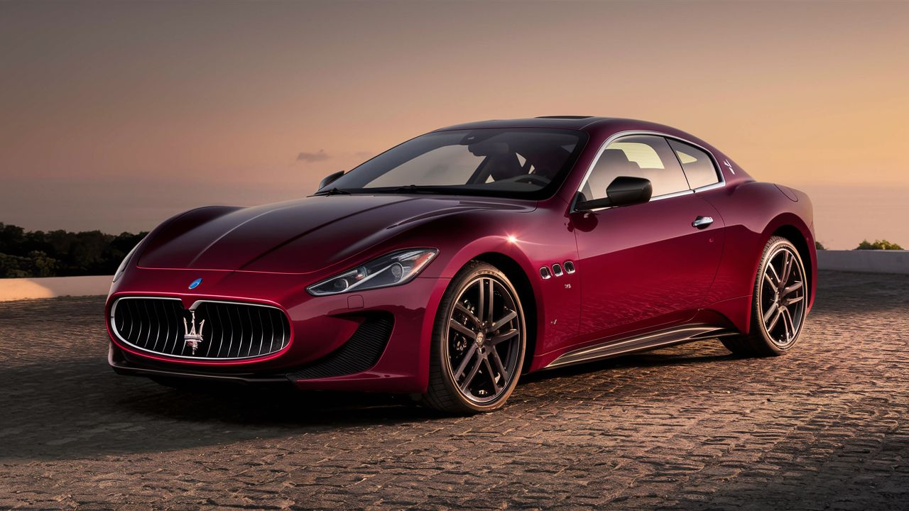
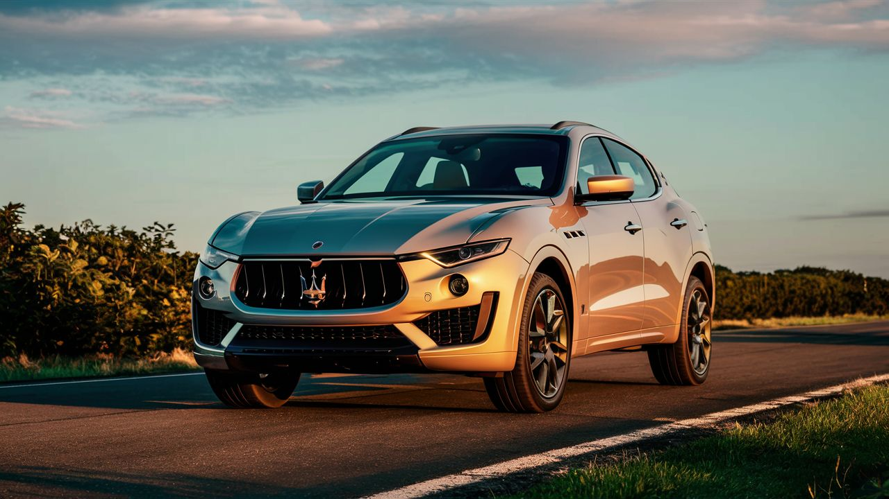

Maserati
Maserati S.p.A. es un fabricante italiano de automóviles de lujo, reconocido por su elegancia, rendimiento y diseño italiano distintivo. Fundada en 1914, la marca ha sido propiedad de Stellantis desde los años 2010. Maserati se ha destacado por su compromiso con la excelencia y la innovación en la fabricación de vehículos exclusivos1 . Con una historia rica en audacia y pasión por los automóviles deportivos, Maserati continúa siendo un referente en el mercado de automóviles de lujo. Sus modelos emblemáticos y su enfoque en la velocidad, potencia y elegancia italiana han consolidado su posición como una marca deseada por los amantes de los superdeportivos exclusivos
Modelos destacados
Maserati Quattroporte:

Motor: V6 de 3.0 litros Twin-Turbo o V8 de 3.8 litros Twin-Turbo Potencia: 424 - 582 caballos de fuerza Aceleración (0-100 km/h): 4.8 - 4.2 segundos Características: Berlina de lujo, diseño italiano, rendimiento deportivo. Precio: Desde aproximadamente $104,000 USD.
Maserati GranTurismo
Motor: V8 de 4.7 litros Potencia: 454 caballos de fuerza Aceleración (0-100 km/h): 4.7 segundos Características: Coupé deportivo, diseño elegante, sonido distintivo del motor. Precio: Desde aproximadamente $150,000 USD.
Maserati Levante
Motor: V6 de 3.0 litros Twin-Turbo o V8 de 3.8 litros Twin-Turbo Potencia: 345 - 580 caballos de fuerza Aceleración (0-100 km/h): 6.0 - 3.8 segundos Características: SUV de lujo y alto rendimiento, diseño distintivo, conducción dinámica. Precio: Desde aproximadamente $76,000 USD.